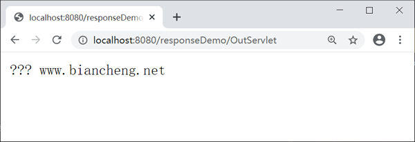

HttpServletResponse接口详解
在 Servlet API 中，定义了一个 HttpServletResponse 接口，它继承自 ServletResponse 接口。HttpServletResponse 对象专门用来封装 HTTP 响应消息，简称 response 对象。
Servlet 容器会针对每次请求创建一个 response 对象，并把它作为参数传递给 Servlet 的 service 方法。Servlet 处理请求后，会将响应信息封装到 response 对象中，并由容器解析后返回给客户端。
由于 HTTP 响应消息由响应行、响应头、消息体三部分组成，所以 HttpServletResponse 接口中定义了向客户端发送响应状态码、响应头、响应体的方法，下面我们将针对这些方法进行介绍。

在 doGet() 方法中调用 run2() 方法，使用字符流输出响应内容到浏览器，再次访问 OutServlet，结果如下图。
使用字节流向页面输出中文是否会出现乱码问题？不一定。
第一种方式：
第二种方式：
Servlet 容器会针对每次请求创建一个 response 对象，并把它作为参数传递给 Servlet 的 service 方法。Servlet 处理请求后，会将响应信息封装到 response 对象中，并由容器解析后返回给客户端。
由于 HTTP 响应消息由响应行、响应头、消息体三部分组成，所以 HttpServletResponse 接口中定义了向客户端发送响应状态码、响应头、响应体的方法，下面我们将针对这些方法进行介绍。
响应行相关的方法
当 Servlet 返回响应消息时，需要在响应消息中设置状态码。因此，HttpServletResponse 接口定义了发送状态码的方法，如下表。| 返回值类型 | 方法 | 描述 |
|---|---|---|
| void | setStatus（int status） | 用于设置 HTTP 响应消息的状态码，并生成响应状态行。 |
| void | sendError（int sc） | 用于发送表示错误信息的状态码。 |
响应头相关的方法
HttpServletResponse 接口中定义了一系列设置 HTTP 响应头字段的方法，如下表所示。| 返回值类型 | 方法 | 描述 |
|---|---|---|
| void | addHeader(String name,String value) | 用于增加响应头字段，其中，参数 name 用于指定响应头字段的名称，参数 value 用于指定响应头字段的值。 |
| void | setHeader (String name,String value) | 用于设置响应头字段，其中，参数 name 用于指定响应头字段的名称，参数 value 用于指定响应头字段的值。 |
| void | addIntHeader(String name,int value) | 用于增加值为 int 类型的响应头字段，其中，参数 name 用于指定响应头字段的名称，参数 value 用于指定响应头字段的值，类型为 int。 |
| void | setIntHeader(String name, int value) | 用于设置值为 int 类型的响应头字段，其中，参数 name 用于指定响应头字段的名称，参数 value 用于指定响应头字段的值，类型为 int。 |
| void | setContentType(String type) | 用于设置 Servlet 输出内容的 MIME 类型以及编码格式。 |
| void | setCharacterEncoding(String charset) | 用于设置输出内容使用的字符编码。 |
响应体相关的方法
由于在 HTTP 响应消息中，大量的数据都是通过响应消息体传递的。因此 ServletResponse 遵循以 I/O 流传递大量数据的设计理念，在发送响应消息体时，定义了两个与输出流相关的方法。| 返回值类型 | 方法 | 描述 |
|---|---|---|
| ServletOutputStream | getOutputStream() | 用于获取字节输出流对象。 |
| PrintWriter | getWriter() | 用于获取字符输出流对象。 |
注意：getOutputStream() 和 getWriter() 方法互相排斥，不可同时使用，否则会发生 IllegalStateException 异常。
示例
创建一个名称为 responseDemo 的项目，并在 net.biancheng.www 包下创建名称为 OutServlet 的 Servlet 类，代码如下。
package net.biancheng.www;
import java.io.IOException;
import java.io.OutputStream;
import javax.servlet.ServletException;
import javax.servlet.annotation.WebServlet;
import javax.servlet.http.HttpServlet;
import javax.servlet.http.HttpServletRequest;
import javax.servlet.http.HttpServletResponse;
/**
*
* @author 编程帮 www.biancheng.net 使用response对象向页面输出内容
*
*/
@WebServlet("/OutServlet")
public class OutServlet extends HttpServlet {
private static final long serialVersionUID = 1L;
protected void doGet(HttpServletRequest request, HttpServletResponse response)
throws ServletException, IOException {
run1(response);
// run2(response);
}
protected void doPost(HttpServletRequest request, HttpServletResponse response)
throws ServletException, IOException {
doGet(request, response);
}
// 使用字符流向页面输出
public void run2(HttpServletResponse response) throws IOException {
response.getWriter().write("编程帮 www.biancheng.net");
}
// 使用字节流向页面输出
// 使用字节流向页面输出
public void run1(HttpServletResponse response) throws IOException {
// 设置浏览器打开文件时编码
response.setHeader("Content-Type", "text/html;charset=UTF-8");
// 获取字节输出流
OutputStream os = response.getOutputStream();
byte[] str = "编程帮 www.biancheng.net".getBytes("UTF-8");
// 输出中文
os.write(str);
}
}
启动 Tomat 服务器，在客户端浏览器地址栏输入“http://localhost:8080/responseDemo/OutServlet”访问 OutServlet，结果如下图。在 doGet() 方法中调用 run2() 方法，使用字符流输出响应内容到浏览器，再次访问 OutServlet，结果如下图。

response 中文乱码问题
response 对象向页面输出时有两种方式：字节流、字符流，这两种方式输出中文时都有可能出现乱码。下面我们针对这两种方式出现乱码的原因以及解决方案进行介绍。使用字节流输出中文
ServletOutputStream outptuStream = response.getOutputStream(); outputStream.write(“编程帮 www.biancheng.net”.getBytes());
使用字节流向页面输出中文是否会出现乱码问题？不一定。
乱码原因：
字节流输出中文是否出现乱码，取决于中文转成字节数组时与浏览器打开时采用的字符集是否一致。若两者保持一致，则不会出现乱码问题，若不一致就会出现乱码问题。解决方案：
将中文转成字节数组时和浏览器默认采用的字符集保持一致即可，代码如下。
response.setHeader("Content-Type", "text/html;charset=UTF-8");
// 获取字节输出流
OutputStream os = response.getOutputStream();
byte[] str = "编程帮 www.biancheng.net".getBytes("UTF-8");
// 输出中文
os.write(str);
使用字符流输出中文
使用字符流向页面输出中文是否会出现乱码问题？一定乱码。乱码原因：
通过字符流输出的内容是存放在 response 缓冲区的，response 缓冲区的默认字符集是 ISO-8859-1，该字符集不支持中文。解决方案：
将 response 缓冲区和浏览器采用的字符集保持一致即可，有如下 2 种的方式。第一种方式：
// 设置response缓冲区的编码
response.setCharacterEncoding("UTF-8");
// 设置浏览器打开文件所采用的编码
response.setHeader("Content-Type", "text/html;charset=UTF-8");
// 输出中文
response.getWriter().write("编程帮 www.biancheng.net");
第二种方式：
response.setContentType("text/html;charset=UTF-8");
response.getWriter().write("编程帮 www.biancheng.net");
关注公众号「站长严长生」，在手机上阅读所有教程，随时随地都能学习。内含一款搜索神器，免费下载全网书籍和视频。

微信扫码关注公众号